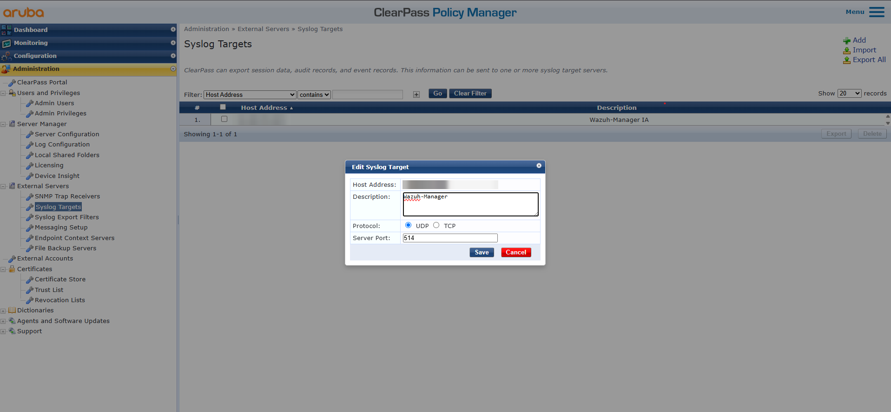
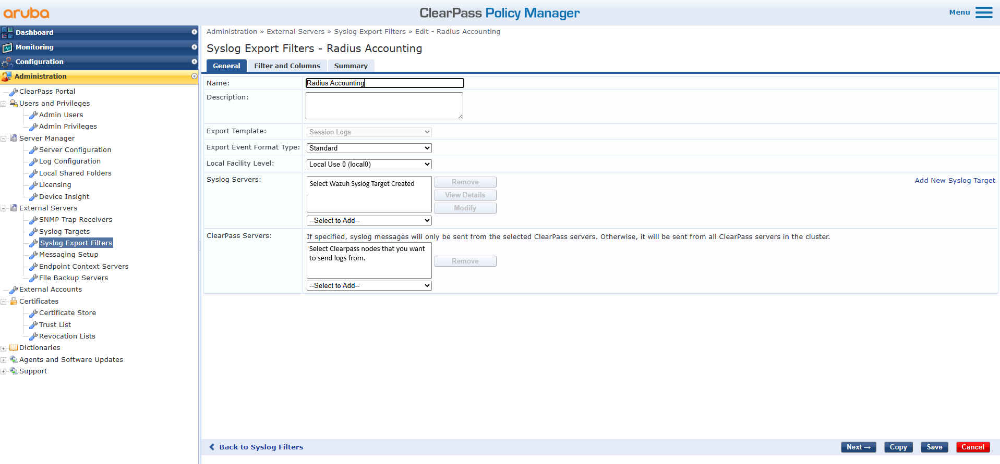
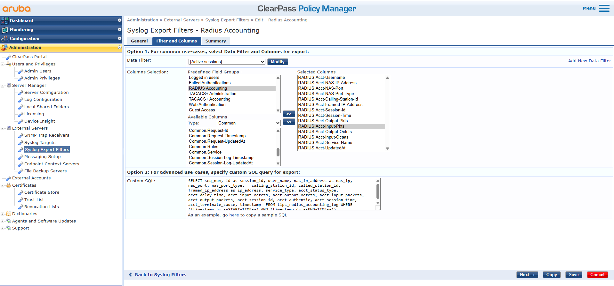
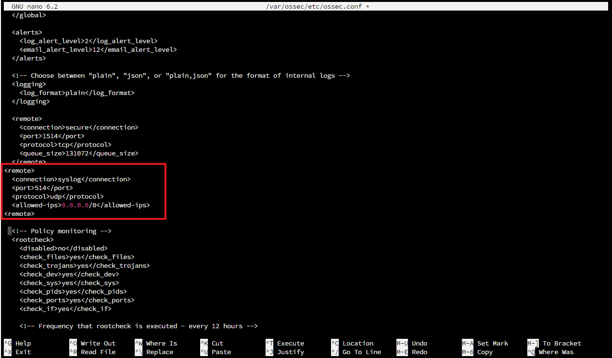
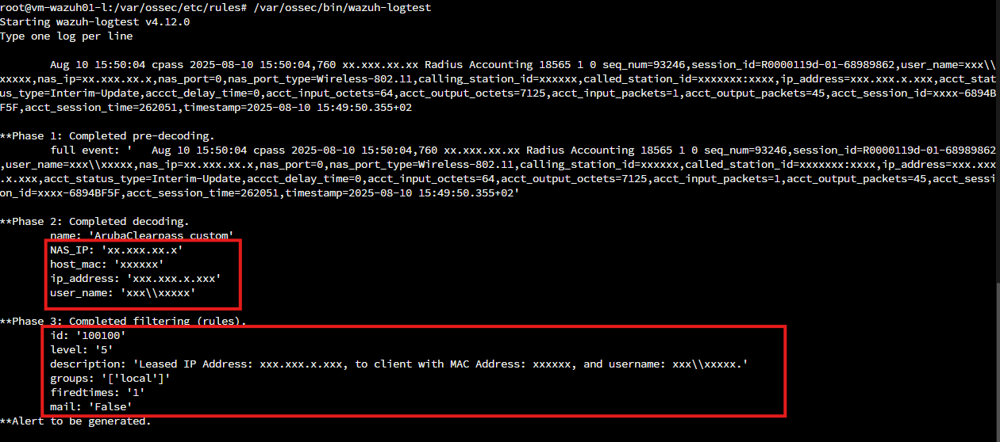

HPE Aruba ClearPass & Wazuh Integration
Forward ClearPass RADIUS accounting to Wazuh over syslog, decode it, and turn every session into one readable alert: leased IP, MAC address, and username.
ClearPass knows who is on your network: which user, which device, which IP, and when. That information is far more useful in a SIEM, next to firewall and endpoint logs, than sitting in the ClearPass console.
This guide forwards ClearPass RADIUS accounting logs to Wazuh over syslog, parses them with custom decoders, and turns each session into one readable alert. The same approach works for any log type ClearPass can export: authentications, policy events, admin changes, and system alerts.
Step 1: Send syslog from ClearPass
Go to Administration → External Servers → Syslog Targets and add a target:
- Host Address: your Wazuh manager's IP
- Protocol / Port: UDP or TCP, 514

Next, go to Administration → External Servers → Syslog Export Filters and create a filter for the logs you want. On the General tab, attach the syslog target you just created.

On the Filter and Columns tab, set:
- Data Filter: [Active Sessions]
- Column Selection: RADIUS Accounting
- Type: Common

Before version 6.11.0, getting the leased IP (Framed-IP-Address) into the export required a custom SQL query under Option 2. From 6.11.0 it is available directly in Option 1. If you are on an older version, this is the query Aruba provides on the Innovation Zone:
SELECT seq_num, id as session_id, user_name, nas_ip_address as nas_ip, nas_port, nas_port_type, calling_station_id, called_station_id, framed_ip_address as ip_address, service_type, acct_status_type, acct_delay_time, acct_input_octets, acct_output_octets, acct_input_packets, acct_output_packets, acct_session_id, acct_authentic, acct_session_time, acct_terminate_cause, timestamp FROM tips_radius_accounting_log WHERE ((timestamp >= --START-TIME--) AND (timestamp <= --END-TIME--))Save the filter.
Step 2: Receive syslog on Wazuh
On the manager, open /var/ossec/etc/ossec.conf and add a syslog listener:
<remote>
<connection>syslog</connection>
<port>514</port>
<protocol>udp</protocol>
<allowed-ips>0.0.0.0/0</allowed-ips>
</remote>allowed-ips controls who may send syslog. 0.0.0.0/0 accepts anything, which is fine for a lab; in production, restrict it to your ClearPass nodes.

Restart the manager:
sudo systemctl restart wazuh-managerStep 3: Confirm logs are arriving
sudo tcpdump -i any port 514 -n
tail -f /var/ossec/logs/archives/archives.log | grep cpassThe archives log is only written once archiving is enabled in ossec.conf. To browse archived events in the dashboard as well, enable archives in filebeat.yml. See the Wazuh docs on event logging.
With the filter above, a RADIUS accounting event looks like this:
Aug 10 15:50:04 cpass 2025-08-10 15:50:04,760 xx.xxx.xx.xx Radius Accounting 18565 1 0 seq_num=93246,session_id=R0000119d-01-68989862,user_name=xxx\\xxxxx,nas_ip=xx.xxx.xx.x,nas_port=0,nas_port_type=Wireless-802.11,calling_station_id=xxxxxx,called_station_id=xxxxxxx:xxxx,ip_address=xxx.xxx.x.xxx,acct_status_type=Interim-Update,accct_delay_time=0,acct_input_octets=64,acct_output_octets=7125,acct_input_packets=1,acct_output_packets=45,acct_session_id=xxxx-6894BF5F,acct_session_time=262051,timestamp=2025-08-10 15:49:50.355+02Step 4: Add the decoders
Create /var/ossec/etc/decoders/Arubaclearpass_custom.xml:
<decoder name="ArubaClearpass_custom">
<prematch>Radius Accounting</prematch>
</decoder>
<decoder name="ArubaClearpass_custom">
<parent>ArubaClearpass_custom</parent>
<regex>nas_ip=(\.+),</regex>
<order>NAS_IP</order>
</decoder>
<decoder name="ArubaClearpass_custom">
<parent>ArubaClearpass_custom</parent>
<regex>user_name=(\.+),</regex>
<order>user_name</order>
</decoder>
<decoder name="ArubaClearpass_custom">
<parent>ArubaClearpass_custom</parent>
<regex>ip_address=(\.+),</regex>
<order>ip_address</order>
</decoder>
<decoder name="ArubaClearpass_custom">
<parent>ArubaClearpass_custom</parent>
<regex>calling_station_id=(\.+),</regex>
<order>host_mac</order>
</decoder>
<decoder name="ArubaClearpass_custom">
<parent>ArubaClearpass_custom</parent>
<regex>nas_port_type=(\.+),</regex>
<order>host_mac</order>
</decoder>Step 5: Add a rule
The rule pulls out the three fields that matter most, leased IP, MAC address, and username, and puts them in one sentence. Create /var/ossec/etc/rules/ArubaClearpass.xml:
<group name="local">
<rule id="100100" level="5">
<decoded_as>ArubaClearpass_custom</decoded_as>
<description>Leased IP Address: $(ip_address), to client with MAC Address: $(host_mac), and username: $(user_name).</description>
</rule>
</group>Restart the manager again:
sudo systemctl restart wazuh-managerStep 6: Test with wazuh-logtest
Run /var/ossec/bin/wazuh-logtest and paste the sample event from step 3. You should see the fields extracted in phase 2 and rule 100100 fire in phase 3.

Where to go next
This covers one log type, but the pattern is the same for the rest: export it, decode it, write a rule. A few simple dashboard panels, such as authentication successes vs. failures, top users, and busiest NAS devices, pay off quickly and are easy to extend.